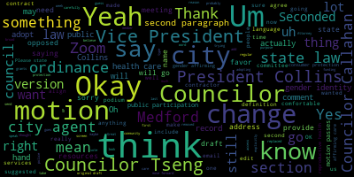
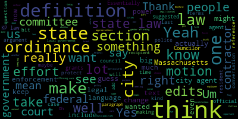
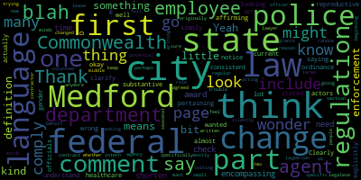
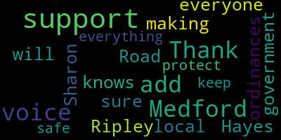

[Unidentified]: Test one, two.
[Lazzaro]: April 1st. This is a meeting of the Committee on Public Health and Community Safety. Thank you all for being here. We are meeting today to discuss the public or the gender affirming care and reproductive health care ordinance. Thank you for your patience. We have a draft of the ordinance that has been worked on for quite a while. Um, the draft was circulated with committee members. Um, this week, and it was also reviewed over the past few weeks with with our legal representation at KP law. And Councilor Tseng and I met and discussed with our council and Um, we have a version that is not we can't circulate that where we can't present to the public. Because it's attorney client privilege. The comments can't be circulated. So I do have a clean version. But what I what I shared with the council with the committee members is the red line version. Um, to compare with what we have as the draft of the last version that we reviewed. So what I wanted to say as an introduction before we get into our deliberations is just reviewing the purpose of this ordinance. uh, initially, it was to reaffirm that gender affirming care and reproductive health care is a right in Medford. That is true at the state level as well. Um, but, uh, everything is very uncertain right now. So it is nice to have something, um, when you're not sure where things are going, where your community is heading to know that your local lawmakers are sort of shoring up the right to gender affirming care and reproductive health care in all its forms. in your local laws. So that's what this ordinance is aiming to do. It is reaffirming access to those healthcare resources, also reaffirming that healthcare providers will not be in trouble for providing those resources, also saying that Medford is a welcoming community in these ways. for people of any gender and anybody trying to access this type of care and provide this type of care. It also goes into a type of business called a limited services pregnancy center, which is a business that can present itself like it's a something that would provide reproductive health care, but really is misrepresenting itself and doesn't really provide that kind of health care services. Correcting the record on some of that and also I'm not sure. Oh, and I'm just saying that people who provide health care services won't be penalized for doing so in Medford. So what I was hoping that councilors can do is look at the two versions of this document, decide which of the changes we would like to adopt in our final version, and then hopefully send it to the regular city council meeting so that we can move forward with adopting the ordinance if we'd like. Councilor Tseng. Oh, I have to touch you. Okay, that's seven.
[Hurtubise]: You're seven.
[Unidentified]: Yes.
[Tseng]: Thank you. Thank you for your introduction of what this ordinance is. This is, I believe, maybe the third time that our current form of this committee has worked on it so far. I know we've met in prior sessions before we had this city council elected. So this is something I'm really excited to get across the finish line, particularly at a time when we see such insecurity. from the federal government with regards to the rights of people to practice what is legally possible in their own jurisdiction. I mean, needless to say that a lot of what people are doing is constitutionally protected, at least in Massachusetts, it's protected by the state constitution and state law. And yet we still see instances where there is law enforcement coming in and taking people away, locking people up for those activities. When the Dobbs decision rolled around years ago, I think the big question for policymakers at the state and local level was how can we protect our residents, particularly from out-of-state efforts to impose their law on us, and to seek the arrest or the punishment of people who come to Massachusetts for care and to Massachusetts doctors and medical professionals who provide that care as well. And since that conversation, this effort, which is an effort that a lot of cities have pursued, has grown into an effort to also protect people seeking gender-affirming care and providing gender-affirming care as well. And I think it's a matter of semantics, but this particular version of the ordinance in both forms derives from what a lot of municipalities and what the state government is doing to protect our residents. And the language is pretty much one-to-one besides the references to Medford and making it a little bit Medford specific. And that aspect, I think, is really important, because it's important for us to note that a lot of cities are pursuing trans-sanctuary city legislation, reproductive sanctuary city legislation. That is this. And this is actually stronger than a lot of those efforts. Because some of those efforts are ordinances, but rather just resolutions, which means that it's non-binding, has no legal force, that the city wanted to revoke it at any time. The city could do it even without a vote of the city council. And this codifies those protections for a resident so they can know that they are safe from that behavior in Massachusetts. Now, with regards to our meeting with legal representation, the second draft that Councilors have, the one with the red line edits, is a draft that aligns the text that we have been reviewing in this committee before to the text of the state law and to a lot of municipalities that are now passing these ordinances and aligning themselves with state law. And now the big benefit of that is that substantively, there's not much of a change in terms of what we're protecting. But in the case of litigation, if that, God forbid, ever happens, this gives us more legal protection because we can work with other cities and the state government to protect ourselves in court. And that means less pressure on our city's legal resources as well. Yeah. I think that there's a huge benefit to that because it's different. It's harder for a single municipality to defend a single text versus when you have a bunch of municipalities, a bunch of lawyers working on this, plus the state government and AG's office working on this to defend the text. I also want to underscore that this is a very much a legal effort and that this is in the wheelhouse of state and local governments. There's been some questions raised about that. The 10th Amendment is really clear that there are powers that are given to the state and to the local government, that the state has what we call police power. So the power to make laws for the general welfare, particularly law enforcement and what law enforcement can and can't do is very much in that world. of police power, which means that the state and local governments are the ones to make that decision. And the federal government can't coerce state and local governments to change their policies to match the federal government. That's been tried many, many times in the federal courts. It's been tried with the Supreme Courts before. And that principle holds very, very strongly. And while litigation over This particular ordinance and this, you know, the gender affirming care and the reproductive health care ordinances is still relatively young. This has made it up to circuit courts, it's made it up, you know, the court chain, and it's been upheld in most, if not all cases. except in jurisdictions with judges that are politically appointed, that are staffed against the effort, which is not a situation we face in Massachusetts, because the First Circuit, because of Massachusetts courts, are much more politically neutral and not like that. So I wanted to give a bit of the legal argument for my fellow Councilors and for residents who asked me those questions over the last few weeks as well. And I look forward to discussing this text with everyone.
[Lazzaro]: Thank you. So I would suggest if we have any motions, I know that Councilor Collins is on actually she may not be she may have just she may be coming in the building now. Council Collins was on zoom but is arriving. Um, and I wanted to give her an opportunity to speak on this topic, but a couple of the changes that were recommended by our council was to explicitly align the text with our state with the state law, um, specifically in the first section. Um, which has in the second paragraph of the first section, which maybe I can put our draft ordinance on the screen. Can you tell me how to do that? So I can put it on Zoom, share my screen on Zoom? Okay. Okay, this is our draft that we shared with our lawyers. In the second paragraph that we have here, they replaced it with, it is therefore declared to be the city of Medford's public policy for the city to comply with the provisions of state law, including quote, enact expanding protections for reproductive and gender affirming care, chapter 127 of the acts of 2022 as set forth herein. Um, I'm curious to hear thoughts from Councilors on adopting or not adopting that as an amendment to the ordinance. Welcome, Councilor Collins. Actually, oh, Councilor Collins. Okay. Still, okay.
[Collins]: Thank you. I was listening in on my commute here. Sorry for being late to the chambers. On the specific amendment, I just wanted to clarify, is this replacing any text from the draft?
[Lazzaro]: So I think it is replacing, actually, Is it fully replaced the second paragraph or is it pulled up? Yeah, it does replace the second paragraph then. Yeah, the second paragraph that's up here as written is replaced by what I just read out.
[Collins]: I would say, in general, I want to be deferential to the sponsors of the ordinance. And you have been very, very closely involved in crafting a language to meet the intent of this. And I trust that intent is to be as strongly protected as possible, which is my preference as well. I like that the original second paragraph calls out very explicitly what we're trying to do. I hear the concerns about adhering this with other city ordinances and state law as a protective mechanism for being able to do this protective work while also making sure that if the federal government decides to pick a fight legally, we'll have allies. I think that's a good idea. But I'm curious if we think there's a utility to keeping both.
[Lazzaro]: So would you be interested in adding that section in addition? Okay.
[Collins]: Yeah, depending on if other councillors disagree and, you know, have a good reason, then I'm amenable to that, but I would keep both.
[Lazzaro]: Would you like to say that in the form of a motion?
[Collins]: I will, if there's any, if anybody has a reaction to that, I'd hear it first, but if others agree, then I would. I just don't want to step on any toes.
[Lazzaro]: Personally, I think I would agree with that as well. I think that there is a hesitation to, oh, I'll be right with you. I think there's a hesitation to explicitly state What it is we're trying to do? What it is we're trying to do? I guess, in a sense, because of where we're at. And I think that's a lot of what we're grappling with in this ordinance. And I think that's just a decision that we all have to make, is how explicitly are we doing what we're doing? And that's all I'll say about that.
[Tseng]: I think this is one of the examples where, so there are some edits in here where I don't think it's necessarily so important or so material to go one way or the other. And I think I could see an argument for even combining the two. you know, keeping the reference to the state law, and then also just keeping what we want to be the purpose and the policy of the of the ordinance, and then, you know, having another conversation with legal counsel, if they flag it.
[Lazzaro]: I am curious what happens if the state law is changed or repealed, or then the specificity of it is changed at all, if it negates anything, or if we have to go back in and amend it because it's so specific. Yeah. Okay, is there anything else from, well, I mean, there's a lot of, there are a lot of changes suggested. So I guess another option is, do we want to, do we want to adopt the changes? Do we want to not adopt the changes? Do we want to take some time and go through them? piece by piece. Councilor say.
[Tseng]: Yes, I think my recommendation is that because we have someone online will have to take a roll call vote. I would prefer that maybe we move section by section and then I can keep track of, no one's online?
[Lazzaro]: No, Councilor Leming is absent. So, and now that Vice President Collins is here, we're all here.
[Tseng]: Wonderful. In that case, we can, I think, go section by section. Yeah.
[Lazzaro]: Councilor Callahan.
[Callahan]: Thanks. I just wanted to clarify. To me, it actually looks like there aren't very many changes. A lot of these are simply a comment saying that it is consistent with state law. So that is, you know, 1234567 just on the first page and almost all of the comments on the first page as well as in one of the comments. I might be wrong about that. But many of these what look like changes aren't. And I wonder, could we go over just the substantive changes first? Would that be okay?
[Lazzaro]: I'm comfortable with that. Are we comfortable with just going over? Yeah. So OK, so that that section in the in the top paragraph felt like a substantive change to me. A lot of the a lot of the recommendations in the track changes are comments about like broad strokes, big picture things about like, are we comfortable with the level of. Are we comfortable with doing this period? Um, then it's you know. Yes, this is aligned with state law. Um, you know, align with state law line of state law. All of those things are, um, just updating us on that, which is really helpful. Um There is a comment on In the the, uh, What is I think the third page of our printed copy? That says where it says city agent. It's a definition. City agent means any employee. I will scroll. City agent means any employee of the city of Medford, whether full time or part time, regular or seasonal, any intern or volunteer when acting on behalf of the city of Medford, any contractor for the city of Medford while a contract between the city of Medford and said contractors in effect, and any recipient of city funding grants, awards or appropriations. And there is a suggestion that the city should carefully think about what that like how broad that is, that maybe it would include too many people. I think also it does occur to me that like, you know, there are organizations that we give grants and funding to like, you know, churches to fix a building or nonprofits to provide transportation to individuals that may not need to be kind of included. So that's one thought. I will go to Vice President Collins. Yes.
[Collins]: Thank you. And I'm sorry. I don't have a direct response to what you were just speaking to. I'm just I'm noticing some areas. I'm noticing some discrepancies between the two versions of the ordinance that aren't noted in the markup. So I just want to be certain that there, I think that there might be things that were changed by legal counsel in the markup version that just weren't aren't being called out using the traditional markup notation like we're not seeing the strikeout we're not seeing this was added or at least I'm not in this version of the printout and I just want to make sure we call those out and discuss them if we need to. For example, the definition of gender identity has been changed, maybe not substantively, but substantially. And I think we should talk about that. And I also note that these are just two that I noted off the top of my head, and I suspect there may be others. Under definitions, pregnancy related service has been deleted. So I think unless I'm missing something, and that's always entirely possible, I think it might be worth going through this section by section, because there's some stuff that's been changed that is not apparent. Yeah.
[Hurtubise]: Yes, I just can't put it on.
[Lazzaro]: Okay, I, yes. So the way that this prints when you print it doesn't have every change. I know that there were something like 141 edits made. So I think I can, if I send it to you, could you email it to the committee? I think it's just...
[Hurtubise]: Let me turn on your, sorry.
[Tseng]: So the conversation is about whether we include contractors. Essentially it boils down to whether we include recipients of city funding grants, awards, or appropriations in the definition for city agent. Now something I did notice in comparing the two copies is that in the KP law suggested copy, the one that aligns our language with the state, there's actually no reference to agents, in which case that definition actually, we should probably take that definition out. And actually, if there is a real big substantive change, I think that is one of them, is the KP law's suggested version of the ordinance essentially takes out the enforceability or the kind of like the oversight that we would have over contractors and people who receive city funds or appropriations grants. And I think that's something for us to think about. Yeah, that's a policy thing. And I think the pros are, I think it'd be nice to get something stronger. I think the con is, does that take us out of alignment with the state? Will we have to defend that separately in court? Otherwise, the edits to the definition sections aren't really that big. Essentially, any change to the definitions in the section are based on state law. So it's just copying and pasting in how the state has defined certain terms. and then making sure that we're defining the terms the same as how the state is defining the terms.
[Collins]: Thank you for the clarification.
[Tseng]: But the big one is city agent, I guess, which that's the whole other substantive debate that I just laid out.
[Lazzaro]: OK. Thank you. So you think that that was removed for that reason, that it's not in the state law?
[Tseng]: City agent. Yeah, I guess. So KP law actually didn't suggest, didn't make a solid recommendation about whether we change the definition of city agent. Like they didn't, they didn't modify the language. They just suggested that we look at it.
[Lazzaro]: Yeah.
[Tseng]: Um, but I can also see the argument being that we, we take it out if we choose to have this ordinance apply to city employees or officials. if that makes sense. If we want to expand the scope, if that's what we choose, then we might want to. We will need this definition.
[Lazzaro]: OK. The clerk is sending the fully redlined version. I do think my impression is aligned with Councilor Tseng that the majority of the changes will be to align the language with the state law. Is that you getting an email? So some of the changes are things like capitalizing the C in the word city. So there are a lot of changes like that that I think we can adopt comfortably. There are other changes like removing the second paragraph or condensing it. There are some things that were redundant. And I guess there are larger shifts that we should probably look at really carefully and think carefully about if we would want to adopt them. I did also reach out to the chief of police about a section at the end, but we can get to that. Vice President Collins.
[Collins]: Great, thank you for those clarifications I appreciate it. So just to be clear, the updated definitions. They now match the language in state law. Okay. All right. Thank you. There are ones that I would change but I guess that would require a changing state law and I see the merit of having them be in alignment.
[Lazzaro]: I don't think it requires that we change state law. I mean, we can have something that's not perfectly in alignment. We would just have to make the choice to do that. And if we're, I mean, I think if we believe solidly that it's not enough or it doesn't go far enough or whatever, or it needs greater protection for whatever reason, I don't think it precludes us, but I don't think it's not possible for us to do. It's just what was recommended to us.
[Collins]: Yeah.
[Lazzaro]: I've made it more confusing.
[Collins]: Thank you, sorry. I'm just thinking, I admit I was reading over the state definition of gender identity and the part that says like provided however that this gender identity may be demonstrated through like essentially paperwork was surprising to me. Obviously that's a statewide vulnerability if that's the language that the state has. Sorry, I feel like I derailed us. I'm happy to continue going through. flag. That's for circling back at the end.
[Lazzaro]: Okay. Um, okay. Councilor Tseng
[Tseng]: I guess I think that is a decent like, yeah, it's a vulnerability in the state's definition of gender identity, which doesn't really line up 100%, I think it's like 80%, maybe 70% there with what people conceive of as gender identity, but that last 20% isn't there. I think that's something worth considering, worth talking about. Yeah, I mean, I think, Essentially, I think a lot of the edits that this committee could make today, I would say we would be fine making those edits, moving out of committee, and then getting legal counsel to have a second look at it, or just choosing to adopt what legal counsel did and to cut out that stuff. So I think a lot of the edits today will fall in one or two, one or either one of the buckets. Yeah. I did also want to make a point about city agents, since we were still talking about that, and there's that whole attached conversation of how expansive do we want this to be. I think something to consider, not to say that this is the make or break, but I think something for us to consider is, do we realistically foresee that extra reach being very helpful? I can see that breaking either way. So let's take the recipients of city funding grants, awards, or appropriations. I guess we should ask ourselves, what are those groups that are getting that money? And is there even any way that they could break this ordinance, break this law? Because they might, I mean, They're not carrying out the warrants. They're not carrying out the arrests. They're not reporting the data. And they don't have the image to report. And so perhaps, even though we're technically narrowing the scope, practically, we're not making a change. But you can see an argument where maybe there just happens to be a law enforcement-related grantee or recipient. And we want this to extend to them as well. Although I can't think of any of my mind, any groups in my mind with that power.
[Lazzaro]: Yeah, I think the, our goal here is to broaden the protections as much as possible and not necessarily broaden the like, punishments. Because that. As long as our residents and visitors are protected, then that. Then we're or a contractor while they're under contract with the city. That feels to me like what we mean when we say city agent. And I think in the language, if we were saying something else, we would say something else. We wouldn't be saying city agent. I don't think when we're talking about like a member of the Unitarian Universalist Church of Medford, we're saying city agent. We would just say that probably.
[Tseng]: Yeah, although they would fall under what we originally have, they would fall under the definition of the same agent.
[Lazzaro]: Right, which I think is probably too broad. I think that's a good point made by our council. That is not actually a change that's suggested, that's a comment. Yeah, it's a comment, right. Yeah, so that would have to be a separate motion. If we were to say, like, adopt the changes, then separate motion if we wanted to take that in.
[Tseng]: I would say, I think, contractors, where I kind of, like, think we should see if we can include contractors. I think that is the like that's the one that's in the definition for an agent that's not in the rest of the ordinance, right? Or as keep you all suggested that I think potentially I can see that overlap being there.
[Lazzaro]: I think the contractor while under contract with the city, I would agree with you because I think that can include a lot of people who have long term contracts with the city. Um Yeah, I think so, too.
[Tseng]: We might have data.
[Lazzaro]: Sure. Yeah. Yeah. Um, do Councilors have any other thoughts about. Uh, any of the other sections where I know it takes a while to look over the stuff. Councilor Calihan, wait, you're six, yes. Councilor Calihan.
[Callahan]: Thanks. You notice one thing as I'm looking, so just below that, after D before E, all city agents shall comply with any state regulation pertaining to reproductive and gender-affirming healthcare, not otherwise explicitly stated in this ordinance. And the change is all city employees and officials shall comply with any state or federal law. Clearly, we understand the current state of federal actors and potential for federal law changes. And I wonder, was that state regulation very specific to not include federal regulation when it was originally written? Is that something that we specifically want to keep and perhaps leave out federal law silently? Because I don't think that's going to get us in any trouble just to not include the words or federal.
[Lazzaro]: don't know about that. My understanding was always that when we write these, we have to include, notwithstanding any state or federal law, to the contrary. Though it is also, I think, implied. Vice President Collins can confirm that for me. Actually, you're nodding. And you're requesting, anyway. Vice President Collins.
[Collins]: Sorry. I don't want to cut you off. Yeah, I think that that's one of those things that we, as a matter of practice, tend to put into ordinances. And it also should go without saying, and does, even though we write it. So I don't think that it substantively changes the ordinance to leave it out. And I also don't think that we need to go out of our way to be reminding city agents to comply with federal laws that are increasingly in direct opposition to the well-being of people who live here. There was a different point I was gonna make, but I forgot what it is. You can make that one too. No, I forgot what it is, so.
[Tseng]: If I could. Yes, please. I agree with Councilor Callaghan here, that we should think about taking it out. I think here's the situation, is I'm confident that the Constitution grants us the right to make this law and to have this law rule over other supposed federal laws that trample on states' rights. But I think this creates almost like a inconsistency within the language of the statute. to essentially, like, someone could point at that and say, well, they're not even trampling on states or, you know, your local rights to write your own ordinance because you've incorporated all federal law in this clause. And so I, that's another question for council, but I would say we shouldn't adopt that. because I think our loyalty to the Constitution is implied. We all took oaths to that, right? And that should rule above anything else. Accidentally incorporating federal law, I worry that, I would just worry that that would nullify this ordinance.
[Lazzaro]: Right. I mean, that's basically what it would do.
[Tseng]: Yeah.
[Lazzaro]: That's the interesting thing about the Constitution and the rule of law is that it always is supposed to be the thing that you follow. Even if you don't say it all the time, you're supposed to follow those laws. Anyway. Great. OK. I think I would agree with that. there is another, there's a couple comments from council that we should review a few sections of the ordinance with the health department and the police department, which I am happy to do. I did, I have an email out to the chief and I spoke with the board of health this week. So that's in process. And before this goes before the full council will That'll be done. I might have to, you know, knock down some doors, but it'll happen. Um, and in the meantime, I mean, I feel like we can check those boxes when we come to them. But is there anything else that You'd like to Discuss before we Move forward. Any other substantial adjustments.
[Hurtubise]: Councilor Collins.
[Collins]: Um, not a suggested amendment. Just I just want to make sure that we talked about it. I noticed that the legal counsel recommended that we take out the drafted section, um, which would have. Limited limited service and limited service pregnancy centers for like advertising their services in the city, and I know that that was because it was a potential like first amendment violation. Um, So I just didn't want that to go unnoted for the reason for it to be deleted from the draft. I know that in a lot of other communities, there's been action taken to not prevent anybody's constitutionally protected right to free speech, including to spread misinformation about abortion and pregnancy. it's my understanding that where our ability stops is being able to say you're not allowed to talk about your business, even if your business is fraudulent, you still have a right to be able to advertise about it. Is that, am I correct in that being the motivation for taking that section out of the ordinance?
[Lazzaro]: That's my understanding. I believe we can still, I mean, I believe you can still include information on consumer protection. So that element of it, I think is still fine. And it's especially because the Attorney General's Office has like a database of these, like these organizations that are spreading misinformation. Yeah, and that's allowed. But you can't, you can't like, shut down
[Collins]: That makes sense, and I was happy to hear that the legal counsel flagged that as, you know, we want to pass a strong ordinance that doesn't open us up to any unnecessary liability, and this still emphasizes the city's responsibility and intent to publish consumer protection information that can help empower people to know, like, what these are should they come into the community. We just wanted to, just wanted to clarify, just wanted to confirm that that was the intent behind that.
[Tseng]: Is this what used to be number four?
[Collins]: That used to be... In the old draft. In the old draft?
[Tseng]: I'm just trying to follow. Sorry.
[Collins]: Oh, yeah. Sorry. I should have said that.
[Tseng]: Oh, is the number?
[Collins]: It used to be, like, I think it was G2. G2.
[Lazzaro]: Yeah, G2. Yeah, it's pulled out. It basically, that in our original draft, I'll show you.
[Hurtubise]: Oh, yeah, it's right here on the screen, actually.
[Lazzaro]: It says no limited services pregnancy center shall make or disseminate before the public or cause to be made or disseminated before the public, et cetera, et cetera. They just, it said like, you can't advertise your company that you know to be reason, that you know to be, you know, spreading misinformation. But that was removed, that was suggested to be removed, but still has, you know, something about the Attorney General's consumer protection resources, access to consumer protection resources. I do wonder, in an ordinance, those consumer protection resources may be available now, but it's something that's going on the books. Is that something that can be to be updated easily. How easily can we update? The language of that if that were to change.
[Collins]: Where is this?
[Lazzaro]: Yeah.
[Collins]: And on the City Council. Yeah.
[Lazzaro]: Just
[Collins]: Thank you. Yeah. I think this will be the last comment that I make. Overall, I just want to say thank you so much to the sponsors. I think that this is started out strong, got stronger, both in that I think the intent is still really there, really protective. I'm really proud that we're passing as strong of an ordinance as has been passed in any other Massachusetts community, maybe beyond. And also, I think that part of that strength is making sure that we're not We're not leaving anything in there that doesn't that potentially opens the city up to liability that doesn't also help us better protect residents because that is not useful to our cause. I do think circling back to the definition section I do think that if you know subject to. you know, a vote by the committee. I would, just for the purpose of what we report out of this committee, and if it changes before we take a vote to ordain it, that's fine. I would make a motion to delete the part of the gender identity definition that comes after the first semicolon. I know that that's in alignment with state law. But I personally was surprised to see that language. The first clause also aligns with state law, and then we're just like getting a little less descriptive. Again, if my fellow Councilors don't agree, I won't take it personally. I think that's fine. I understand the motivation behind having it align perfectly with state law. But that part that I'm... suggesting that we take out would be the part that says, provided however that gender identity may be demonstrated through medical history, care or treatment of the gender identity, consistent and uniform assertion of the gender identity, or any other evidence that the gender identity is sincerely held as part of a person's core identity, and provided further that gender identity shall not be asserted for any improper purpose. And my motivation behind that is just especially in this environment, I think we're gonna see more people with gender identities other than like woman assigned female at birth and man assigned male at birth who don't have documentation that it's a core part of their identity because it's less and less safe to do that. I just don't think that we need to uphold that premise in our definitions. If that's something that legal counsel insists we change before we take a vote to ordain this, that's fine, but I'd rather we delete it.
[Lazzaro]: Councilor Callahan?
[Callahan]: I have something small, and I'm mostly just asking if this language means what I think it means. under the role of the police department. So the language changed from the police department of the city of Medford shall not to blah, blah, blah, no officer or employee of a law enforcement agency of the Commonwealth. And I'm not a lawyer, I'm more of a layperson in terms of legalese. To me, a law enforcement agent of the Commonwealth is a state police. So I think what we're trying to say is the Medford Police Department, and the new language does not say that anymore.
[Hurtubise]: Um, uh, yes. Uh, hmm.
[Lazzaro]: Sorry, uh, Councilor Collins.
[Collins]: Um, my assumption perhaps is that Maybe the intent in this language is that local police counts as a law enforcement agency of the Commonwealth, but I think that we should, I think we should make it really clear.
[Callahan]: Yeah, why are we writing language for any random city in the Commonwealth? Like we're Medford, we should only be talking about Medford.
[Collins]: We're talking about Medford, yeah. No, I think that's a good point.
[Lazzaro]: I think it was to align with the state law to just say, we're not doing anything unusual or different from what Massachusetts has already done. We're just aligning. But I think I would agree with you. Councilor Tseng.
[Tseng]: I just pulled up the state law definition that they cite too, so section 63. It includes municipal police departments. It also includes university, college university police departments as well.
[Lazzaro]: Okay. That would be useful. We do have the Tufts police.
[Tseng]: Wonderful.
[Lazzaro]: I just wanted to make sure.
[Tseng]: No, it was a good flag. Okay.
[Lazzaro]: So there is a motion on the floor from Vice President Collins. Do we need a roll call for that? I'm sorry, could you repeat the motion? Or do we want to do public participation?
[Unidentified]: I can also email it to you.
[Hurtubise]: Yep.
[Lazzaro]: there any other motions or do we need to? Would we like to vote on that motion? Would we like to do or would we like to do public participation before we vote on any motions? Maybe we do public participation first. Um, actually, Councilor Tseng has requested. Do you still? Is that still active? Yes, Councilor Tseng.
[Tseng]: Thank you. Um, I think my, my last kind of note, like, uh, flag is I think it could make sense to take out the definition for CD agent, but insert, um, or contractor after each like employee or official. Um, and we might want to, um, insert a definition of contractor in, um, in the definition section as well. And I can do a quick search to make sure that there's nothing in the state law that defines contract or otherwise. But I think what we have here is a decent definition of it. So we can just kind of move it around.
[Lazzaro]: Yeah. Councilor Callahan.
[Callahan]: Thank you. So my only thing about that is, I think in the city agent definition, it's kind of a little bit more encompassing. It says employee of the city, whether full-time or part-time, regular or seasonal, any intern or volunteer when acting on behalf of the city of Medford. And I kind of like that definition. And I feel like it's a little bit more encompassing. Is there a reason to not go with that one? No.
[Tseng]: I think actually that also makes a lot of sense. Yeah. we can choose not to accept the instances where agent was taken out, and then just keep that.
[Callahan]: But shorten that, shorten it to that, just the beginning part of that.
[Tseng]: Yes, yeah, yeah, yeah. So shorten it to basically the employee part, the volunteer part, and the contractor part.
[Callahan]: Yeah, I'm of two minds of the contractor part. I think we might need to check. I don't know what we need to check, but I'm sure that first part, and I think we're all agreed that not the grants and the award, people who got an award. So I think we're just in the middle section of the contract.
[Tseng]: And I might suggest also adding officials to the definition if we're doing that, because that's something that was put in that wasn't in a whole draft. And that could be helpful. So appointees and elected officials don't, you know.
[Hurtubise]: Yeah.
[Lazzaro]: Okay, I would like to go to public participation. If anybody would like to speak in person or on Zoom. You can come up to the podium or you can raise your hand on Zoom. I see one hand on Zoom, but it's, yes, okay. Yes, I will go to Zoom.
[Marie Izzo]: Hi, sorry, I couldn't seem to get on. Anyway, I want to thank you for all the hard work on this effort that you all made. It makes such a difference to know that Medford is going to in any way, shape or form be there for our friends and neighbors. So I absolutely support this measure. And once again, I have to thank you very much. That's all.
[Lazzaro]: Thank you, Marie. I'm sorry, I forgot to ask you, can you state your name and address for the record?
[Marie Izzo]: Yes, Marie Izzo, Pilgrim Road, Medford, Massachusetts.
[Lazzaro]: Thank you. Seeing no more hands, I will go to the podium. Let me just turn on your mic. Which one is that? Okay, the mic is on. Please state your name and address for the record.
[SPEAKER_02]: Kate Ryan, 34 Warren Street. I am here in full support of this measure. We need to keep people safe in these challenging times and this will keep people safe. Thank you for your efforts on this matter.
[Lazzaro]: Thank you very much. I'm gonna go to Zoom. Sam, please state your name and address for the record.
[SPEAKER_05]: Hi, I'm Sam Cato. I live in 24 Commonwealth Road in Watertown. And I was wondering, I'm in support of this ordinance to be clear. I was wondering if the, if this will be, where this will be put publicly, because I know that you had it on the screen, but like, I don't know where we can see the full text.
[Lazzaro]: That is a good question. One second. I am just gonna go to Vice President Collins. No, Vice President Collins, sorry.
[Collins]: Do you know the answer? Sorry, I was just trying to sidebar you. The meeting documents for this meeting, if they're not already uploaded, they'll be on the City Council's public portal website, which you can go to the City of Medford website and click on City Council and you'll find our public portal. If the documents for tonight's meeting aren't up yet, I'm sure they will be by tomorrow. and after this is voted on, if it is approved, it will eventually be added to the city's muni code and search city of Medford muni code. I know there's a backlog on ordinances that still need to be uploaded there, but in the meantime, you can find them on the city council public portal from the date on which they were voted on.
[Lazzaro]: Yes, and to elaborate the MedfordMA.org is the city's website. I will go to the podium. Please state your name and address for the record.
[Jennifer Yanko]: It's on. It's on. Okay, thank you. My name is Jennifer Yanko. I live at 16 Monument Street. And I just wanted to add my voice in real gratitude to all of you for taking the time. This is so comprehensive and thorough. And it's so important right now that we really proactively protect all of our residents. And this certainly serves to do that. And so I'm very grateful. And I just want you to know that there are a lot of us who are really thankful for this. I know this is a lot of work. So thank you. Thank you.
[Lazzaro]: I'm going to go to Zoom. Mike, I'm sorry, I missed your hand before it because it blended in with the background on your screen. So I apologize.
[SPEAKER_00]: That's fine. Zoom and the hand situation is tricky. My name is Mike Denton. I live at Bellevue Terrace in Medford. And first and foremost, thanks so much for doing this. I realized I said that in a friendly kind of a way that belies the incredible seriousness and value of this whole effort. I will confess that I came here really hoping that it would be like, let's vote this out of committee tonight. But everything that I've heard so far suggests that this deserves more of the very thoughtful deliberation you've been giving it. So I think I came here just to say thank you so much. I want you to know that there's so many people. And by so many people, I mean as a business owner in Medford who serves a population that is entirely covered by this ordinance that you're debating, I can tell you that there are a lot of people who are exceedingly grateful to know that this is the Medford that we live in. You did a wonderful job earlier of kind of dancing around, describing the current state of affairs in our country without making it sound too dire, because it's getting really scary. And I think entirely because nobody needs to live in a country where their government makes them scared for their lives. or their safety. So because this ordinance is here, because I can see that you're acknowledging that, I'm here to say thank you for that. That's all.
[SPEAKER_10]: Thank you.
[Lazzaro]: Yes, I'll go back to the podium. Please state your name and address for the record.
[Hays]: Sharon Hayes, Ripley Road in Medford. I'll just add my voice to those in support of these. I'll just add my voice in support of these ordinances and in thanks for all of you for doing this and making sure that everyone in Medford knows that our local government supports them and they will do everything they can to protect and keep them safe. Thank you.
[Lazzaro]: Thank you. Mary, your hands still up. Is that a leftover hand up on zoom? Or would you like to speak again? Oh, down it goes. Okay. Um, so, uh, seeing no more public participation, I will go to Councilor Tseng you're my son already.
[Tseng]: Thank you. Um, I know Councilor Collins, the vice president Collins has her motion on the floor. Um, I just wanted to Oh, I guess I just wanted to take the definitions section edits all at once too. With the new edits and stuff, it's not alphabetized anymore. So if Councilor Collins is amenable to re-alphabetizing it, adding that to your motion, that'd be helpful. Thank you.
[Lazzaro]: Okay, uh, so that's do you? Did you want to do the motion about the, um. City agent.
[Tseng]: Yes Yes. I would also, you know, we can just put all on the floor right now. I'll I'll make the motion to The, oh, I guess the other thing I forgot about the definition section, to add, I'll motion to add the word, to add officials to the definition of city agent and then to take out the recipients of city grants and whatnot. Yes, thank you. I deleted it off the straps.
[Lazzaro]: Councilor Tsengamon to keep the word agent where the original draft had it and to add officials to the definition of city agent. And then it's to remove the last phrase in that section, which was any recipient of city funding grants, awards or appropriations.
[Jennifer Yanko]: Grants, awards or appropriations.
[Tseng]: And then I had one more motion. I know this committee discussed wanting to keep the second paragraph, the one in purpose, that was suggested to us to be deleted. So I would motion to remove that paragraph. to put it back in, but also to keep the reference to the state law in the purpose section. And I have some new language, which I can send to the clerk. I just wanted to make it a little bit more succinct, a bit more concise. I'll read it to you guys. So between the first paragraph and then the section about complying with provisions of state law, I propose this. Further, it is contrary to the city of Medford's public policy to participate in the enforcement of another state's civil or criminal law when that law seeks to deny an individual's right to bodily autonomy and criminalize a person's effort to live as their full authentic self. And thus, the city's resources should not be expended toward that end. Oh, yes. So that's my last motion to add that to after the first paragraph.
[Lazzaro]: And accept the rest of the edits from KP Law. And you will email that to the clerk.
[Hurtubise]: Yes, yeah.
[Lazzaro]: Great. Okay, shall we do roll call votes on? Oh, we need seconds on all of those. Okay, seconded on the vice president Collins motion to strike the language from the definition of gender identity. provided, however, that gender identity may be demonstrated through medical history, care or treatment of the gender identity, consistent and uniform assertion of the gender identity or any other evidence that gender identity is sincerely held as part of a person's core identity and provided further, the gender identity shall not be asserted for any improper purpose. Do we have a second? Seconded by Councilor Callahan. All in favor? Aye.
[Tseng]: Aye.
[Lazzaro]: All opposed? The motion passes. on the motion of Councilor Tseng to keep the word agent where it was in the original draft. Add officials to the definition of city agent and remove the last phrase, seconded by Councilor Callahan. All in favor? Aye. All opposed? The motion passes. On the motion of Councilor Tseng to move the suggested edit of KP law of the second paragraph in the purpose section. To move it and add the paragraph that he read earlier. Seconded by Councilor Callahan. And to accept the remaining edits. Seconded by Councilor Callahan. All in favor?
[Tseng]: Aye.
[Lazzaro]: All opposed? The motion passes.
[Tseng]: I have one more motion. Yes. I think that the edits that we made today that are different from KP laws are not that big to warrant keeping this in committee for one more month when the circumstances nationally are so dire. And so I and I both you and I are in really frequent communication with KP law about this. So I think if there are any additional comments, we can get them before our next regular city council meeting. Additionally, there's It's going to be three readings on top of that as well. So really, the process is quite drawn out. And the remaining edits that we might make that we probably won't make to this ordinance are really technical. And so I would motion to refer this out of committee to our next regular meeting.
[Lazzaro]: on the motion of Councilor Tseng to send this to the regular meeting on April 8th, seconded by Councilor Callahan. All in favor?
[Tseng]: Aye.
[Lazzaro]: All opposed? The motion passes. Great. That's exciting. And excellent. We will move forward with this then. Do we have any other motions? Motion to, well, Councilor Collins.
[Collins]: I just wanted to thank you both for your hard work over many, many months to bring this draft forward and for making sure that this got a lot of attention right now so that we can get it on, get it up for a vote as expeditiously as possible. And I've been really working very hard to make sure that this both captures the spirit of what Medford residents want this to be and also has the protections of being closely aligned with other communities ordinances and state law. So thank you for your hard work. Thank you to all the community members who reached out to us to hold us to account for working on this. Appreciate it.
[Lazzaro]: Thank you, Vice President Collins. On the motion of Councilor Callahan to adjourn. Do we have a second? Seconded by Vice President Collins. All in favor? All opposed? The motion passes and the meeting is adjourned. Thank you very much.
|
total time: 25.97 minutes total words: 3100  |
total time: 20.32 minutes total words: 2689  |
total time: 10.08 minutes total words: 1724 |
total time: 3.07 minutes total words: 497  |
|
total time: 0.35 minutes total words: 66  |
|||
{kind=link}
{kind=link}
{kind=link}
{kind=link}
{kind=link}